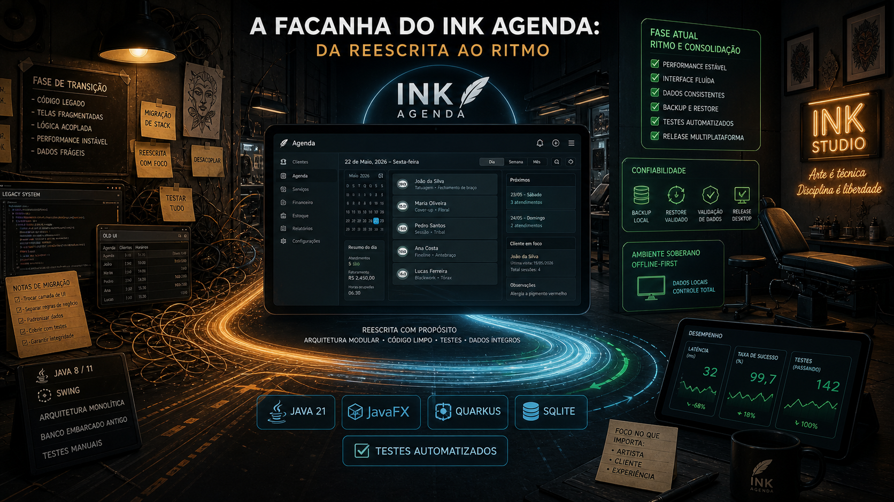

A Façanha do Ink Agenda: Da Reescrita ao Ritmo
- O Desafio: Substituir uma stack online-first (Flutter/Firebase) por uma infraestrutura soberana e local sem interromper o roadmap de produto do estúdio.
- A Solução: Migração completa para Java 21, JavaFX, Quarkus e SQLite offline-first, garantindo operação contínua mesmo sem acesso à internet.
- O Resultado: Redução drástica de falhas operacionais, governança de dados sensíveis via SafeLog e automação estável de releases multiplataforma.
Antes de Tudo: Por Que Contar Esta História
Quando um produto muda de stack no meio do caminho, a narrativa mais comum é simplista: "migramos e ficou melhor". Quem já viveu esse processo por dentro sabe que não funciona assim. Trocar stack mexe com arquitetura, build, testes, cultura de equipe, ritmo de release e até com o que o produto promete para o usuário.
No Ink Agenda, essa virada foi intensa e concreta. O histórico mostra uma jornada que sai de uma base Flutter/Dart com ecos de Firebase e chega em uma composição orientada à soberania local: Java 21, JavaFX, Quarkus, SQLite e Maven, com OIDC Google opcional e offline-first como princípio de operação.
Esta retrospectiva organiza essa travessia em linguagem de oficina: desafios reais, mudanças de foco, ajustes de stack para performance e o ponto onde o produto está agora.
Capítulo 1: O Terreno Inicial e o Peso da Transição
Janeiro de 2026 no Ink Agenda parece um laboratório aberto. O histórico registra muito trabalho de infraestrutura de projeto, scripts de validação, captura de evidências de UI, reorganização de workspace, padronização documental e ampliação acelerada de testes. Era um momento de "arrumar casa" com o sistema em movimento.
Esse volume de ajustes normalmente aponta para um problema estrutural: quando o time percebe que o produto está crescendo mais rápido que sua base de engenharia, o primeiro sinal é a necessidade de criar trilhos. No Ink, os trilhos vieram em forma de scripts de build local, cobertura mínima obrigatória, E2E desktop com Selenium e rotina de validação.
Em paralelo, aparece o primeiro conflito de direção: manter a rota Flutter/Firebase ou pivotar para uma base mais alinhada ao ecossistema da casa e ao perfil de uso real do estúdio de tatuagem brasileiro, que precisa continuar operando mesmo em cenários de conectividade ruim.
Capítulo 2: O Pivô de Stack Que Definiu o Produto
Fevereiro traz os marcos mais claros da virada. O histórico explicita a migração para Java 21 FX, remoção de arquivos obsoletos Flutter/Dart e reforço de persistência SQLite com testes. Em seguida, entra o pacote de implementação com JavaFX + Quarkus e, logo depois, o compromisso de soberania local e offline capabilities.
Esse ponto é central para entender a façanha. O Ink não fez uma troca cosmética; fez uma redefinição de fundação. A stack nova entrega vantagens específicas para o contexto do produto:
1) Desktop primeiro de verdade: JavaFX como interface operacional para fluxo diário de agenda, clientes e financeiro.
2) Backend enxuto e modular: Quarkus para serviços de apoio e integrações com baixo overhead de operação.
3) Dados sob controle local: SQLite como base soberana, sem dependência obrigatória de nuvem para funcionar.
A narrativa técnica muda de "app bonito online" para "produto que aguenta a rotina real". Esse é o tipo de decisão que não gera aplauso instantâneo, mas protege a operação quando o ambiente não é perfeito.
Antes: foco em velocidade de montagem
Depois: foco em continuidade operacional + confiabilidade localCapítulo 3: Performance Deixou de Ser Tempo de Tela
Um erro comum em projetos de agenda é tratar performance apenas como "tela abrindo rápido". O histórico do Ink mostra uma evolução mais madura: performance passa a incluir previsibilidade de build, consistência de teste, segurança de log e estabilidade de fluxo crítico (agenda, financeiro, backup e restauração).
A partir de abril, essa mudança fica visível:
- testes E2E e de regras de negócio ganham protagonismo;
- validações específicas de projeção financeira entram no ciclo;
- componentes de UI recebem IDs para melhorar acessibilidade e testabilidade;
- backup/restore recebe novas validações;
- logging ganha SafeLog para reduzir risco de exposição de dado sensível.
Esse pacote não é "perf tune" clássico de micro-otimização. É engenharia de confiabilidade. Em software de operação diária, confiabilidade é performance prática: menos surpresa, menos quebra, menos retrabalho no caixa do negócio.
Capítulo 4: Release Como Engenharia, Não Como Ritual
Outro trecho importante da façanha aparece na cadeia de release. Em abril, o Ink registra RC1 (v2.0.0-RC1), separa scripts de entrega por plataforma e adapta automações para lidar com assets existentes sem destruir o que já estava publicado. É uma melhora grande de maturidade operacional.
Na prática, isso significa que o produto deixou de depender de publicação "manual heroica" e passou a ter um fluxo mais previsível para Windows, Linux e macOS. A equipe também tratou detalhes que costumam travar entrega real, como versionamento, compatibilidade de scripts no Windows e higiene de repositório (inclusive arquivos sensíveis em gitignore).
Esse movimento conversa direto com performance organizacional: não adianta código melhorar se cada release vira incêndio.
Capítulo 5: Desafios Reais da Jornada
Toda façanha de engenharia tem custo de aprendizagem. No Ink Agenda, os principais desafios que apareceram no histórico foram:
1) Convergência de legado e nova stack: remover resíduos do ciclo anterior sem perder capacidade de entrega.
2) Disciplina de testes em crescimento rápido: manter cobertura e qualidade enquanto regras de negócio mudavam.
3) Risco de dados sensíveis: necessidade de logging seguro e higiene de segredo/token.
4) Complexidade de release multiplataforma: evitar retrabalho e colisão de assets em pipeline real.
5) Alinhamento de onboarding e regra de negócio: startup decision logic e identidade de usuário sem quebrar experiência.
O ponto mais interessante é que os desafios não foram tratados como exceção. Viraram backlog técnico com evidências no próprio histórico.
E Onde Estamos no Momento Atual?
No estado atual, o Ink Agenda aparece em um patamar mais adulto de produto. A base tecnológica está definida, o foco de soberania local está claro e o ciclo recente reforçou qualidade funcional em pontos críticos do negócio (agenda, financeiro, backup/restore, validação de formulário e segurança de log).
Se fevereiro representou a ruptura e abril representou a consolidação, o momento atual pode ser resumido como fase de estabilidade orientada à regra de negócio. O produto está menos preocupado em provar stack e mais preocupado em provar previsibilidade.
Isso não significa que terminou. Significa que o eixo mudou: agora a evolução tende a ser incremental, com critério de aceite técnico mais forte, em vez de mudança estrutural a cada sprint.
Stack consolidada + testes mais fortes + release mais previsível
= base melhor para crescimento sem quebrar operaçãoO Que Esta Façanha Ensina Para o Ecossistema
A história do Ink Agenda ensina uma coisa importante para qualquer produto da casa: mudar stack não é troféu. Só vale a pena quando a mudança reduz risco operacional e aumenta clareza de manutenção.
Também reforça outro princípio: performance real não é só milissegundo; é capacidade de sustentar operação com confiança. Se o usuário não perde agenda, se o financeiro não fica inconsistente, se o restore funciona e se o release não vira loteria, então a engenharia está no caminho certo.
Por fim, o Ink mostra um padrão que deve continuar: testes e governança não entram depois da feature. Eles são parte da feature.
Amarra: Da Reescrita ao Ritmo
A façanha do Ink Agenda foi transformar uma fase de transição intensa em um ritmo técnico sustentável. A equipe encarou mudança de stack, enxugou legado, reforçou testes, tratou segurança de log, organizou release e aterrissou o produto em uma proposta coerente: agenda profissional com soberania local e operação confiável.
No fim, não foi sobre correr mais rápido que os outros. Foi sobre criar um motor que não engasga quando o dia real começa.
Hashtags
Contato
- E-mail: suporte@caracore.com.br
- Site: www.caracore.com.br
- LinkedIn: Cara Core Informática
Software soberano, arquitetura resiliente e produtos pensados para a realidade brasileira.
Conhecer a Cara Core
Artigo publicado em 25 de agosto de 2026
© 2026 Cara Core Informática. Todos os direitos reservados.